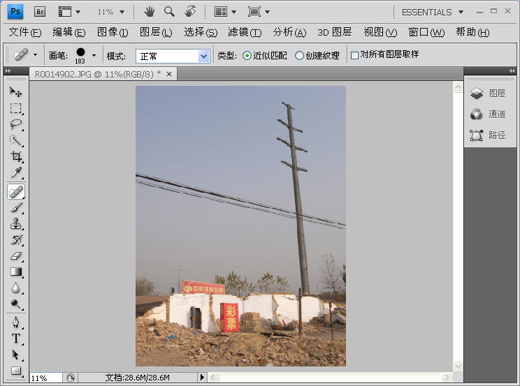
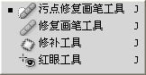
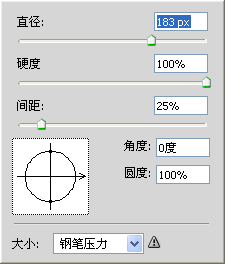
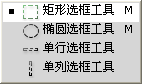
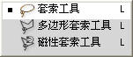
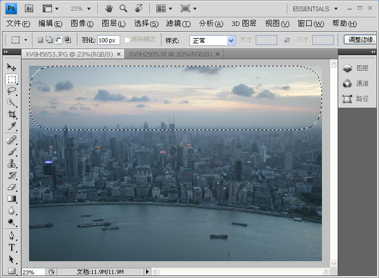
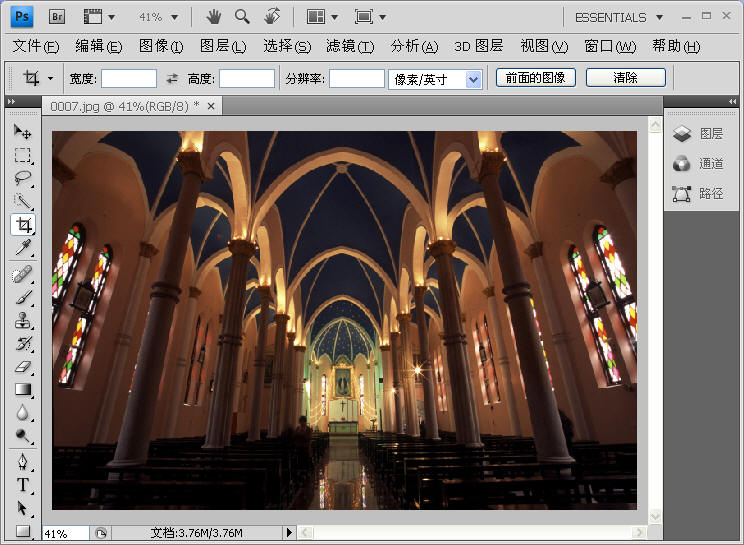
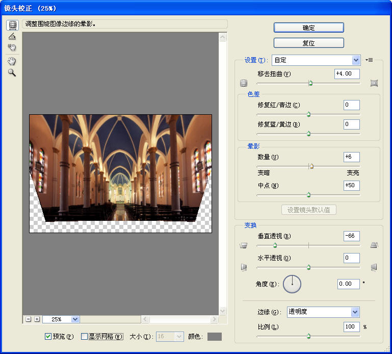
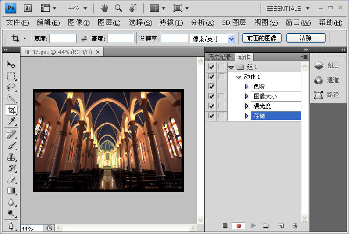

|
第五章：回家后的简单图片处理
第二节：照片的电脑后期处理（数码暗房）
3，Photoshop（PS）图片简单处理：
B，超快速的4步PS进阶
a，小局部调整：消除红眼
、粉刺、电线杆等不需要的东西
b，大局部调整：i，局部勾图处理；ii，叠加
（合并到HDR）；
c，纠正暗角和建筑变形（数码移轴）
d，自动批处理
下面分别讲解：
a，小局部调整：消除红眼、粉刺、电线
（杆）等不需要的东西。方法很简单。下图是PS的主界面，其左边有一竖排工具栏，中间那个斜棒就是污点修复工具。

鼠标右键点击这个斜棒就会跳出好几个选择：

需要注意的是最好把图片放大到100%再修，这样比较精确。点击红眼工具后图片上面会有一排工具参数，就如用毛笔修照片要选择大小合适的笔一样，这里需要根据眼睛的大小选择“画笔”的直径（拖动直径滑块或直接输入数字）。确定后在照片红眼处点击一下即可。粉刺也是同样做法，地上的小纸片墙上的小钉子都照此处理。

在Photoshop中要达到同一效果往往有好几个工具，除了画笔修复工具，消红眼还可使用橡皮擦以及仿制图章工具。画笔修红眼是电脑自动从红眼四周取样来替代红眼，仿制图章的使用首先要按住Alt键，然后用鼠标点击图片任何地方，告诉电脑我不要在红眼四周自动取样而要在鼠标点击处取样来消除红眼。
修复小污点容易，消除电线（杆）等大物体就麻烦一点。比如上面那张图我想抹掉横贯图片中部的粗电线。若使用画笔修复，选好画笔直径后
就顺着电线从左至右拖动。但拖至电线和电线杆交界处要小心，交界处很容易过渡不自然而露出PS的痕迹。此时要把图片放大到100%，精心选择画笔直径，慢慢一点点的抹。如果不满意上一步就点击“编辑”〉“后退一步”，还原刚才做的，
重新选择画笔直径和硬度再抹。还可以改用仿制图章工具，从电线杆的周围某处取样来修复微小的过渡不自然之处。

图片编号R0014902
上图就是用画笔和图章去除电线后的效果，修得我眼发花。仔细看的话电线杆和电线交界处还是露了点PS痕迹。
b，大局部调整：
i，局部勾图处理；ii，叠加（合并到HDR）
某些局部调整，若这个局部比较大，需要单独勾出来进行处理。如下面这张东方明珠塔上拍的上海黄浦江，因为隔着玻璃拍，所以图片灰蒙蒙的。请眯眼看一下这张图片，你会发现天空比城区亮好几倍。首先我进行了整体色阶和曲线处理，但因为天空太亮，若照顾城区的亮度则天空就不可避免的过曝了，效果十分的不理想。于是我在PS左边的竖排工具栏中选择勾图工具，鼠标右键点击从上数第二个虚线框，选择”矩形选框工具“。此虚线框下面还有个像拉索套环似的选框工具，可根据图片局部的形状选合适的工具。



框选工具默认的”羽化“为100像素。古人把成仙称为羽化
，苏轼《前赤壁赋》曰：”飘飘乎如遗世独立，羽化而登仙“。PHOTOSHOP里的”羽化“是对框子与图片的衔接处进行虚化，起渐变的作用从而达到自然衔接。羽化值（多少像素）表示虚化范围大小。虚化有损图片细节，所以越小越好，但过小的话会衔接不自然露出PS痕迹。唉，这个世上还是度不好掌握。千万像素的大图，假如勾出三分之一的话，羽化推荐50-150像素，具体多少看个人喜好。
这张上海黄浦江我羽化100像素再矩形框选天空部分，进行单独的亮度、对比度以及颜色调整（方法参见上一节《超快速的4步搞定PS）。然后再分别框选城区和江面，各自调整。最后的效果如下：

从东方明珠塔上看上海。图片号：Shanghai805A.
局部勾图是一个笨办法，麻烦不说，羽化损失细节还容易露马脚。对于明暗对比大的高反差场景，如灿烂的晚霞和阴暗的地面，最好在前期拍摄时就处理好，如使用灰渐变滤色镜压低天空的亮度。但有了Photoshop数码暗房，大多数时候我们可以抛弃渐变滤色镜，采取包围曝光，以不同的曝光值拍三到五张，把天空和地面分别拍好，在PS中再叠加，从而得到一张HDR超高动态范围的照片（High
Dynamic Range）。操作是：打开包围曝光的5张图片，然后点击”文件“〉”自动“〉”合并到HDR“。按提示操作。
要注意的是，包围曝光需要在三角架上纹丝不动地进行，如果几张图片焦距和构图稍有不同，叠加后会出现重影。对于无法使用三脚架的场合，只能尽量保持身体纹丝不动。如果你定力不够，那还是用渐变滤色镜算了。
c，纠正暗角和建筑变形（数码移轴）
所有镜头都或多或少有成像畸变，如下图所示，中间方框为正确的图像，左右两边分别为长焦镜头的枕形畸变和广角镜头的桶形畸变。
大多数镜头在最大光圈拍摄时还会有暗角出现（图片中心比四周亮度高）。另外在拍摄建筑时，由于仰拍和俯拍，图像会产生内倾或外倒的变形，看得人很压抑。比如下面这张教堂，由于仰拍，建筑强烈变形：

还好我们生活在快乐的数码时代，PS可以轻易纠正这些镜头缺陷，不用因此去购买万元级的移轴镜头，方法是：点击”滤镜“〉”扭曲“〉”镜头校正“，即出现如下的镜头校正窗口。”移去扭曲“我键入+4，消去轻微的桶形畸变（立柱不直）；”色差“滑钮是消除紫边，这里没有就不用动；晕影就是消除镜头暗角，这里我输入+6；”垂直透视“滑钮就是纠正柱子内倾，相当于数码移轴，这里我输入-66。最后点击”确定“即完成这一系列镜头校正。

d，自动批处理
如果一次长途旅行拍了一千张照片，即便每张都只做简单调整也意味着万次以上的鼠标点击。想想就手发软。如果有几十张图片的调整操作差不多相同，我们可以记录其中某张的调整步骤，运用到其他图片上，这就是批处理。
最简单的批处理方法：首先打开一张图片，点击”窗口“〉”动作“，这时就出现了历史纪录和动作栏，在”动作“栏最右边点击下拉菜单，然后点击”新建动作“，窗口最下面红色按钮点亮，象录音机的录音键一样，此时PS就开始记录你的调图步骤。这里我做了四项调整：自动色阶、图像大小、曝光度、存储。做完之后按下红色按钮左边的停止键，动作记录结束。此后如果你打开另外一张图片，按下红色按钮右边的播放键，PS就会自动执行刚才纪录的一组调整步骤，不用一项项点鼠标了，相当快捷。
每一个步骤左边都有框选，如果你觉得有图片颜色很好不用做色阶，那就把色阶勾掉再按播放，PS就会跳过色阶，只执行图像大小、曝光度和存储三项。
可以录下多个动作，比如白天的图片执行动作A，夜晚的图片执行动作B。这样PS上百张图片就很快搞定了。

PS修图就到这里了，本人水平有限，讲的大多数都是简单修理，下拉菜单执行操作就搞定，图层蒙板之类的复杂操作都还没涉及。虽然PS很强大，“不怕做不到，只怕想不到”，但我们摄影的原则是尽量在前期做好，不得已才留给后期。
比如上面把电线PS掉，其实在拍摄时往前走两步就可以躲开电线。往前走几步只要几秒钟，后期慢慢修复需要几分钟还不止。
假设拍美女发现她脚边有一纸片，你可以上前拣走，也可以后期PS拣走。PS本身并无过错，拍照无罪，修图有理。古代用胶卷的时候，前辈们也一样用笔修底片，扩印的时候叠加遮挡也屡见不鲜，只不过现在我们把它数码化了。但2008年中国陕西PS出了一只华南虎，严重败坏了PS的名声。这只老虎告诉我们，片面强调PS的作用是不对的，一般来说拍照本身的技巧要占70%以上，我们还是把主要精力放到快门上吧。
|